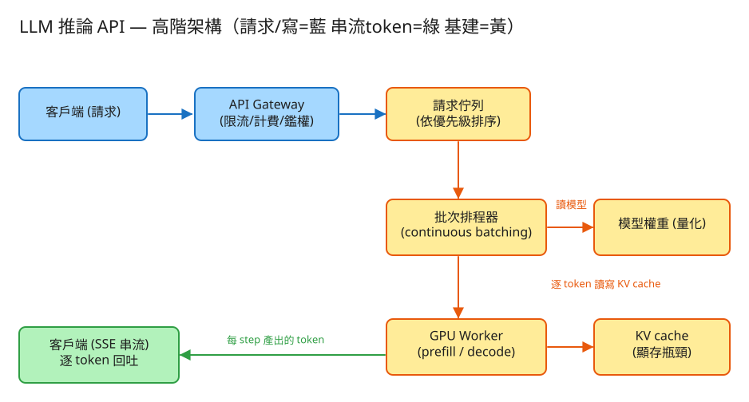

E AI/LLM 看故事就懂 輕鬆讀 25 分鐘
想像你開了一家店，店裡只有一張超級貴的桌子（一張 GPU，租一小時就燒掉好幾百塊）。 客人（請求）一個個上門，每個人都想坐這張桌子，叫 AI 幫他「寫一段文字」。
LLM 推論 API 就是這家店的帶位系統：怎麼安排客人坐這張貴桌子，讓它一秒都不要空著、又不會讓客人等太久。 ChatGPT、各種 AI 對話服務的後台，本質都在做這件事。
很多人第一直覺是：「不就是呼叫一次 AI 模型、把答案傳回來嗎？有什麼難？」難就難在那張桌子實在太貴了。
所以這題的一切設計，都是為了同一件事：讓這台貴車隨時都載滿客人。衡量做得好不好的標準，不是「單一客人多快到家」， 而是「每小時總共載了多少人」——工程上叫吞吐量（throughput）。
還有一個關鍵：AI 生成文字是一個字一個字慢慢吐的（不是一次想好整段）。它每吐一個字，都要回頭看一遍前面所有的字，再決定下一個字。 這個「一個字一個字、邊吐邊往前看」的特性，正是後面所有設計的根源。
💭 停一下：如果 GPU 這麼貴，為什麼不乾脆「一個客人一張桌子」，誰來就現開一張，省得排隊？
別被「推論服務」嚇到。一個請求從進門到吃飽離開，其實就闖 4 關：
客人一進門，門口的服務生先做三件事：看你有沒有票（API key 鑑權）、看你今天是不是點太多（限流）， 還有幫你記帳（用了多少字、之後好算錢）。
👉 這一關刻意做得很輕、很快，因為它不負責「算 AI」，只負責守門。守門的可以多請幾個（沒狀態，隨便複製）。
進場後不是馬上有桌子，要排隊。但排隊有講究：付錢多的 VIP 排前面，「不急的批次任務」（例如半夜跑報表）排最後面墊底。
輪到上桌了。重點來了：那張貴桌子一次可以坐好幾個人（GPU 一次能同時幫好幾個請求算）。 問題是——怎麼安排併桌，桌子才不會有空位？這就是本題的靈魂：動態批次（continuous batching）。
這就是「動態批次」：AI 每吐一個字（一個 step），系統就檢查一輪——誰生完了就讓出座位，立刻從排隊區拉一個新請求補進來，不用等整批一起結束。 效果驚人：同一張 GPU，吞吐量常常變成笨方法的 2～4 倍。
AI 算好的字，不會等整段寫完才一次給你，而是寫好一個字就馬上推給你一個字。這就是你在 ChatGPT 看到字「一個一個蹦出來」的原因。
工程上的「取捨」聽起來很抽象。換個方式記：這個系統最怕四件事，每個設計都是為了避開某個「怕」。

✏️ 用 Excalidraw 開啟編輯（diagram.excalidraw）白話導讀，由左到右一路看：
右下角還有一句重點：同一組（排程器 + GPU）可以複製好幾組，忙的時候多開、閒的時候縮回——省錢。
看完上面，這些詞你其實都已經懂了，這裡只是把「工程術語 ↔ 白話」對起來，Part 2 會用到：
| 工程術語 | 白話解釋 |
|---|---|
| 推論（inference） | 讓訓練好的 AI 模型「實際幹活、產出答案」 |
| GPU | 那張超貴、算 AI 用的桌子；空著就在燒錢 |
| token | AI 處理文字的最小單位，約等於「一個字 / 一小段詞」 |
| 吞吐量 (throughput) | 「每秒總共能產出多少字」＝這張桌子每小時載了多少人 |
| 延遲 (latency) | 單一客人要等多久；TTFT＝第一個字多快出現 |
| continuous batching（動態批次） | 像公車邊開邊上下客：座位一空就立刻補新人，不等整批 |
| 靜態批次 | 像包車：湊滿才開、要等全車最慢的人才能換下一批 |
| KV cache | AI 記住「前面算過的東西」的筆記本，省得重算；很吃記憶體 |
| prefill / decode | 先「讀完你的問題」（prefill）→ 再「一個字一個字寫答案」（decode） |
| SSE 串流 | 寫好一個字就推一個字給你（字一個個蹦出來） |
| 租戶 (tenant) | 用這服務的不同客戶／公司，各自分開算帳與限流 |
| 限流 / 配額 | 限制每個客戶用多少，免得一個人吃垮全店 |
| 水平擴展 / 自動擴縮 | 忙就多開幾組桌子、閒就收掉，按需求省錢 |
我們估幾個關鍵數字（數字不必背，重點是感受它的「形狀」）：
| 估什麼 | 大概數字 | 所以呢？ |
|---|---|---|
| 一天多少次生成 | 每日 1000 萬次 ≈ 平均每秒 115 次，尖峰約 350 次 | 要能撐住尖峰，不是平均 |
| 每次寫多長 | 平均一次寫 300 個字（token） | 每秒總共要產出 ~3.5 萬個字 |
| 一張桌子多能產 | 用動態批次，一張 GPU 約每秒 2500 字 | 3.5 萬 ÷ 2500 ≈ 要 14 張 GPU（留點餘裕抓 ~20 張） |
| 記憶體（KV cache） | 每個字、每一層都要記一點 | 聊得越長、桌上人越多 → 記憶體先爆，限制了能併幾人 |
💭 停一下：流量有尖峰也有離峰，為什麼不能「永遠只租 20 張 GPU 開著」？
這題只要記住三張「點餐單」：
① 一次寫完（普通版）
POST /v1/completions
給我：{ 要用哪個模型, 你的提示文字, 最多寫幾個字, 創意程度 }
我回：整段寫好的文字 + 用了多少字（好算錢）「最多寫幾個字（max_tokens）」很關鍵：它順便防止某個人寫到天荒地老把桌子佔死，是限制大訂單的小韁繩。
② 一個字一個字回吐（串流版）← 線上服務主力
POST /v1/completions (stream=true)
我回：寫好 "Hello" → 馬上推給你
寫好 " world" → 馬上推給你
... → 最後推一個 [DONE] 表示寫完了為什麼線上服務都用這個？因為生成是一個字一個字的，等整段寫完才回你要乾等好幾秒；邊寫邊推，第一個字幾百毫秒就出現，體感天差地別（迴轉壽司）。
③ 查用量 / 算錢
GET /v1/usage?tenant=某客戶&from=...
我回：{ 讀進去多少字, 寫出來多少字, 該收多少錢 }計費按「讀進去的字 + 寫出來的字」算。而且記帳不擋在主要流程上——先把字產出去最重要，帳後面慢慢加總就好（這叫「與關鍵路徑解耦」）。
每個請求一列，記它走到哪個階段：排隊中 → 讀題中(prefill) → 寫答案中(decode) → 寫完，
還有是哪個客戶、優先級多高、要寫幾個字、已經寫了幾個、進場是第幾步、完成是第幾步。
每個客戶一列，累加：讀進去多少字、寫出來多少字、總共幾次請求。
| 哪裡會塞車 | 怎麼拓寬 |
|---|---|
| 一張桌子有空位在空轉 | 動態批次：座位一空就立刻補人（公車法） |
| 記憶體被 KV cache 吃光，併不了更多人 | 把筆記本分頁整齊管理（PagedAttention）＋壓縮（量化）省記憶體 |
| 一張桌子再怎麼塞也不夠用了 | 多開好幾組（排程器+GPU）並排服務（水平擴展） |
| 尖峰排隊、離峰桌子空著燒錢 | 自動擴縮：依排隊長度、桌子忙不忙，自動加減組數 |
| 大訂單拖慢小訂單 | 優先級排隊＋限制單筆最多寫幾字；必要時把「讀題」和「寫答案」分開部署 |
| 單一客戶暴衝佔滿全店 | 給每個客戶各自的水龍頭（限流）＋配額，彼此隔開 |
「Part 1 的四個怕」是核心取捨。這裡補幾個常被面試官追問的：
讀十遍不如玩一遍。這題有一個真的可以跑的小程式，讓你親眼看到「公車怎麼邊開邊上下客」：
# 啟動（在這題的 demo 資料夾裡）
cd demo
php -S localhost:8014 -t public
# 然後瀏覽器打開 http://localhost:8014玩過 demo 了，來掀開引擎蓋看看「公車調度到底是哪幾段程式做的」。 好消息：核心只有三個小檔，剛好對應前面講的工作。不用會 PHP，我把程式翻成白話、只留關鍵那幾行，看註解就懂。
客人一進門，先丟進排隊區，並立刻照優先級排好——VIP（付費）排前面，半夜跑報表的 batch 任務墊底。
function 提交請求(客戶, 優先級, 提示文字, 最多寫幾字) {
要寫幾字 = 模型.算出這題大概要寫幾字(提示文字, 最多寫幾字)
新請求 = 建一張點餐卡(客戶, 優先級, 提示文字, 要寫幾字)
排隊區.加進去(新請求)
排隊區.重新排序() // ← 小數字=高優先；同級先到先服務
}排序的規則是「先比優先級，再比誰先到」。這就是 Part 1 講的「醫院檢傷分類」——不是先到先看，是照輕重排。排好之後，調度員每次都從隊伍最前面拉人補位。
這是全題的心臟。桌子有固定幾個座位（最大批次，受 GPU 記憶體 / KV cache 限制）。每推進一步，第一件事就是巡一圈座位，只要有空位、排隊區又有人，馬上把新客人拉上桌——不必等整桌的人吃完。
function 推進一步() {
// ── 公車核心：邊開邊上客 ──
for (每個座位 in 桌子) {
if (座位是空的 且 排隊區還有人) {
新客 = 排隊區.拉出最前面那位()
新客.狀態 = 讀題中(prefill) // 第一步先讀完他的問題
座位 = 新客 // ← 空位「當下」就被補上
}
}
... (下一段：幫桌上每個人寫一個字)
}注意：填補發生在「幫大家寫字」之前。這一念之差就是公車（動態批次）和包車（靜態批次）的分水嶺——不等全車到站，哪個站牌有人、哪個座位空了，這一步就接上。
補完位，接著幫桌上每一位各寫一個字（一個 step ＝ 全桌各前進一個 token）。誰寫到目標字數了，當場宣布完成、立刻清空他的座位——讓下一步開頭的「填補」能馬上把新人放進來。
for (每個座位 in 桌子) {
if (座位是空的) 跳過;
這位客.狀態 = 寫答案中(decode)
一個字 = 模型.寫下一個字(...) // ← 真實系統這行＝GPU 算一次
這位客.已寫字數 += 1
if (這位客.已寫字數 >= 要寫幾字) { // 寫夠了
這位客.狀態 = 完成
座位 = 空 // ← 當場讓座，不必等整桌
}
}
忙碌座位數 = 這一步真正有寫字的座位數
累計利用率(忙碌座位數 / 總座位數) // ← 用來算「桌子坐多滿」「當場讓座」這一行，就是公車「乘客到站立刻下車空出座位」。它和上一關的「立刻補人」一搭一唱，座位才會幾乎時時刻刻是滿的。每一步順手記下「幾個座位在忙」，就能算出整趟的平均利用率。
💭 停一下：為什麼「填補空位」要寫在「幫大家寫字」前面，而不是後面？順序真的有差嗎？
怎麼證明公車真的比較好？demo 用同一批請求各算一次平均利用率：公車法（邊開邊上下客）vs 包車法（湊一組、等全組最慢的人才換）。
// 公車法：每一步「在忙的座位」加總 ÷「總座位」
公車利用率 = 累計忙碌座位 / 累計總座位
// 包車法：每 N 人切一組，整組要陪「組裡最長的人」跑完才放人
for (每一組 of 把所有人每N個切一組) {
整組步數 = 這組裡最長那位要寫的字數 // ← 大家被最慢的人綁住
總座位步 += 整組步數 × 每組座位數
忙碌座位步 += 這組每個人各自的字數 // 短的人寫完就空轉、卻仍佔著組
}
包車利用率 = 忙碌座位步 / 總座位步 // ← 通常明顯低於公車關鍵就在 整組步數 = 組裡最長那位：包車裡早寫完的人空出座位也不能讓新人上，得陪整組跑到最慢那位——空轉就是這樣來的。公車沒這限制，所以利用率（＝吞吐量）常常是包車的 2～4 倍。這就是你在 demo 畫面看到的那兩條對比數字。
| 關卡（前面講的） | 哪個檔 | 關鍵那段 |
|---|---|---|
| ② 照優先級排隊 | BatchScheduler | submit() ＋ 重新排序 |
| ③ 併桌：空位立刻補人 | BatchScheduler | step() 開頭的「填補」迴圈 |
| ③ 寫完當場讓座 | BatchScheduler | step() 裡「達標 → 清空座位」 |
| 公車 vs 包車（吞吐對比） | BatchScheduler | 兩種「利用率」算法 |
| 每位客人的點餐卡 | Request | 狀態 QUEUED→PREFILL→DECODING→DONE |
👉 重點：真實系統會把這個「假廚房 + 一圈 for 迴圈」換成真正的 GPU、vLLM 這類推論引擎，把 KV cache 放進 GPU 記憶體用 PagedAttention 分頁管理。 但「座位空了立刻從佇列補新請求、寫完當場讓座」這套動態批次填補槽位的邏輯，一字都不用改。所以讀懂這個小 demo，你就讀懂了這題的核心。
先不要看答案，自己用講給朋友聽的方式回答看看（講得出來才是真的懂）：
LLM 推論 API = 把超貴的 GPU 當共享桌子，想辦法讓它一刻都不空轉。
4 個關卡：① 門口驗票記帳 → ② 照優先級排隊 → ③ 像公車一樣邊開邊上下客（動態批次）把桌子塞滿 → ④ 一個字一個字串流端出去。
4 個怕：怕桌子空著（動態批次補位）、怕記憶體爆（KV cache 是頭號瓶頸）、怕大訂單餓死小訂單（優先級＋限字數）、怕一個人吃垮全店（各自限流隔離）。
工程細節一句話：先估要租幾張 GPU（瓶頸在記憶體與利用率）→ 用「點餐單(API)」溝通、串流回吐讓首字快 → 兩本筆記本（請求進度／用量）→ 找出塞車環節各自拓寬，閒時自動縮、忙時自動加。
想看更精簡、面試速查用的版本？👉 前往完整版（同樣內容的工程速查格式）。